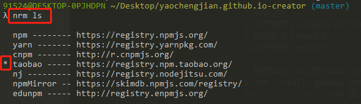
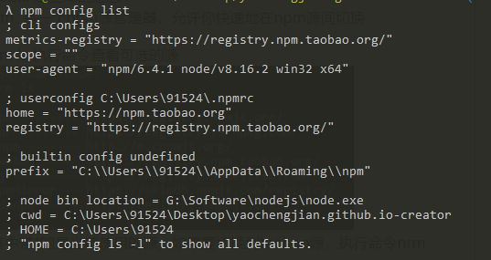

POSTS
2 - Node & yarn
安装 node.js
-
安装双数版本
1.node8 node10 node12 是稳定版
2.尽量选择官网安装
3.下载慢就加入 FQ 插件的代理 -
安装之后
1.自然就有了 node 命令(因为 PATH)
2.自然就有了 npm 命令
3.自然就有了 npx 命令 -
配置 Node.js(因为 node.js 服务器默认在国外，我们需要用淘宝镜像服务器)
1.npm install -global nrm 缩写 npm i -g nrm
npm 是这个命令的开始
install 是载入意思
global 是全局意思
nrm 是一个 npm 源管理器，允许你快速地在 npm 源间切换
2.nrm ls 执行命令查看可选的源

其中带*号的是当前使用的源，如果要切换到 taobao 源，执行命令 nrm use taobao
3.npm config list 查看 nrm 所有配置
